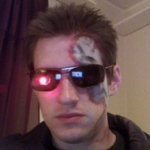

 |
Open Source
I maintain several projects related to math, physics, games, and application frameworks.
Check out my account profiles to the right and my most ambitous endeavours below.
Check out my account profiles to the right and my most ambitous endeavours below.

Professional Experience Most of my paid experience has been in game development, virtual reality, CAD, and related fields. Check out a few select projects to the right and more details below. |

|
| ||||||||||||||||